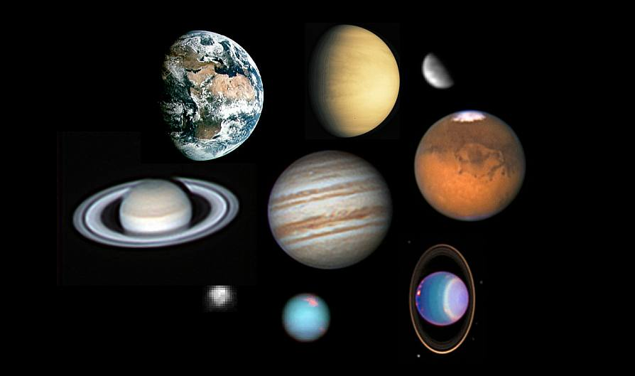

The fourth cosmic speed is the minimum required speed of a body to overcome the attraction of the galaxy at a given point.
The fourth cosmic speed for our galaxy is 550 km / s.
The fourth cosmic velocity is numerically equal to the square root of the gravitational potential φ taken with the opposite sign at a given point in the galaxy, if we choose the gravitational potential equal to zero at infinity.
The speed of movement of the Sun itself around the center of the Galaxy is about 217 km / s, and if it moved about three times faster, it would eventually leave the Milky Way.
Stars located near a supermassive black hole in the center of our Galaxy (object Sagittarius A *) can acquire a significant momentum, sometimes sufficient to overcome the Galaxy's gravity, or even much faster, up to speeds of 4000 km / s in some cases.
Meaning for different galaxy(km/s):